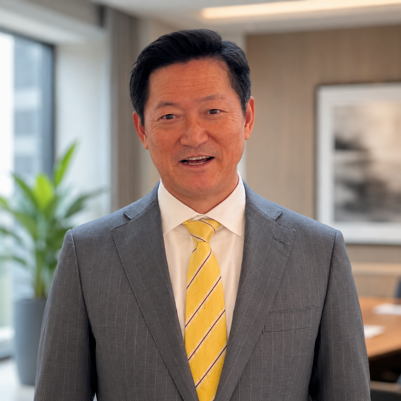

「視点」を知ることと、
実際に「見立てられる」ことの間には、距離があります。
社労士のための組織状態見立て入門セミナーでは、顧問先で起きる離職・メンタル不調・職場不和を、「存在感」と「不安感」から見立てるという視点をお伝えしました。
ただ、視点を知ることと、実際に顧問先のケースを前にして見立てられることは、別のことです。
この1Day体験講座は、聞く講座ではありません。実例をもとにしたケースを見立て、ICMアンケート(体験版)のサンプルを読み解き、改善プランの骨子まで、ご自身の手で作っていただく一日です。
若手社員の離職が続く職場を題材に、結果・行動・思考・感情・存在感・不安感のフレームで組織状態を見立てます。
サンプルデータ(ICMアンケート体験版)を使い、数値から「この組織で何が起きていそうか」の仮説を立てる体験をします。
見立てた課題に対して、どの施策・ツールをどう組み合わせるかを考えます。
顧問先への提案を想定した、3か月の改善プランの骨子を実際に作成します。
「聞いて分かる」ではなく、
「やってみて分かる」。
それがこの講座の設計です。
講座で使ったシートは、そのままお持ち帰りいただけます。
翌日から、顧問先を見る目が変わる一式です。
| 入門セミナー | 1Day体験講座 | |
|---|---|---|
| 位置づけ | 視点を知る | 実際に見立てる |
| ケース | ミニケースを見る | ケースを使って自分で考える |
| ICMアンケート | 概要を知る | サンプルデータを読み解く |
| 改善支援 | 全体像を知る | 改善プランの骨子を作る |
| 持ち帰り | 見立ての視点 | シート一式+自作のプラン骨子 |
早割 27,500円(税込) は 7月15日(水) まで。
2026年8月5日(水)までに養成講座 第7期へお申し込みの場合、1Day体験講座の受講料は養成講座の受講料に全額充当されます。
会場は30席限定(先着)/申込締切:7月27日(月)
1Day体験講座に申し込む 当日ご参加が難しくなった場合も、後日配信をご覧いただけます。| 内容 | 形式 |
|---|---|
| オープニング:なぜ今、社労士に組織状態の見立て力が必要なのか | 講義 |
| 基本フレーム:結果・行動・思考・感情と、存在感・不安感 | 講義+ミニワーク |
| 存在感・不安感の4象限で職場を見る | 講義+個人ワーク |
| ケーススタディー:若手社員の離職が続く職場を見立てる | 個人ワーク+共有 |
| ICMアンケート見立て体験:サンプルデータ(ICMアンケート体験版)を読み解く | サンプル読解+講師解説 |
| 改善アプローチ体験:施策とツールの組み立て方 | ワーク+解説 |
| 顧問先提案ミニワーク:3か月改善プランの骨子を作る | 個人ワーク |
| 自己評価ワーク・養成講座 第7期のご案内・質疑応答 | ワーク+ご案内 |

大阪市生まれ。奈良教育大学卒業後、大阪市内の公立中学校に20年間勤務。保健体育指導・生徒指導に注力し、課題を抱える教育現場を次々と立て直したことから「生活指導の神様」と呼ばれる。
独自の育成手法「原田メソッド」を確立し、勤務3校目の陸上競技部を7年間で13回の日本一へ導く。その後、教育現場で培った人材育成の手法を企業・学校・スポーツの分野へ展開。これまでに約600社・15万人以上のビジネスパーソンを指導し、経営者のコーチングやトップアスリートのメンタルトレーニングにも携わる。
現在も、講演・研修・執筆活動を通じて、自立型人材の育成と、成果を生み出す組織づくりに取り組んでいる。
2002年、28歳の時に社会保険労務士事務所を開業。2005年に『なぜ、就業規則を変えると会社は儲かるのか?』(大和出版)を出版し、世の中の就業規則のあり方に新たな視点を提示する。2021年には『新標準の就業規則 多様化に対応した《戦略的》社内ルールのつくり方』(日本実業出版社)を出版。
戦略的な就業規則づくりを通じて、これまで1,000社を超える企業の経営課題に関わる。社会保険労務士として企業支援を行う一方で、「社労士に頼られる社労士」として、専門家への指導・育成にも力を注いでいる。
また、2005年に原田メソッドを学び、以後、自ら実践するとともに、多くの経営者・士業の方へ原田メソッドを伝えている。
現在は、労働法務・心理学・東洋哲学をベースに、コーチングやファシリテーションの手法も取り入れながら、「人の心を温める組織づくり」に活動領域を広げている。組織に「働きがい」と「安心感」をもたらすことを大切にしながら、人事・労務管理のアドバイザー、研修講師、コンサルタントとして、多くの企業の組織づくりを支援している。
1Day体験講座では、実例をもとにしたケースとICMアンケートのサンプルを使い、組織状態を見立て、改善アプローチを考える流れを体験していただきます。
ただ、顧問先の現場で支援として届けていくには、一度体験するだけではなく、見立ての精度を高め、課題に合わせて支援を組み立て、経営者に伝える力が必要です。
自立型人財・組織育成士養成講座 第7期では、1Dayで体験した内容を土台に、
次の3つを深めていきます。
※ICMアンケート・ECMアンケート等を顧問先支援として実施・提供いただくには、養成講座の修了および育成士登録が必要です。1Day体験講座では、体験版のサンプルデータを用いて見立ての流れを体験いただきます。
※対象資格の条件は社労士のための組織状態見立て入門セミナーと同条件です(開催概要をご参照ください)。
| 講座名 | 顧問先の職場課題を見立てる1Day体験講座 〜離職・メンタル不調・職場不和を、存在感と不安感から読み解く〜 |
|---|---|
| 開催日時 | 2026年7月31日(金) 10:00〜16:30 |
| 申込締切 | 2026年7月27日(月) |
| 開催形式 | ハイブリッド開催(会場+Zoom) ※お申し込みの方全員に後日配信あり(視聴期間1か月) |
| 会場 | ワイム貸会議室 お茶の水 〒101-0062 東京都千代田区神田駿河台2-1-20 御茶ノ水安田ビル4F JR中央線・総武線「御茶ノ水」駅 御茶ノ水橋口 徒歩2分 |
| 定員 | 会場:30席限定(先着)/オンライン参加も受付中 |
| 受講料 |
早割 27,500円(税込) ※2026年7月15日(水)までのお申し込み 通常 35,000円(税込) ※会場・オンライン共通 |
| 受講料の充当 | 2026年8月5日(水)までに養成講座 第7期へお申し込みいただいた場合、1Day体験講座の受講料は養成講座の受講料から全額差し引かれます。 |
| 対象 |
・開業社会保険労務士の方 ・社会保険労務士法人社員の方 ・社会保険労務士事務所の職員の方 ・1年以内に社会保険労務士事務所開業予定の方 ※社会保険労務士有資格者の方に限られます(社労士のための組織状態見立て入門セミナーと同条件) |
| 講師 | 一般社団法人 自立した人と組織を育成する協会 代表理事 下田 直人 |
| 懇親会 | 講座終了後、希望者にて懇親会を予定しています(詳細はお申し込み後にご案内) |
| 主催 | 一般社団法人 自立した人と組織を育成する協会 |
お申し込み後、事務局より請求書をメールにてお送りいたします。請求書に記載の期日までに、クレジットカード決済または銀行振込にてお支払いをお願いいたします。
銀行振込をご利用の場合、お振込手数料はお客様のご負担にてお願いいたします。
早割価格は、2026年7月15日(水)までにお申し込みいただいた方が対象です。お支払い期限は、請求書発行日より7日以内とさせていただきます。なお、開催日が近い場合は、開催2日前までのお支払いをお願いいたします。
お申し込み後にキャンセルされる場合は、事務局までメールにてご連絡ください。
2026年7月23日(木)までのキャンセル:キャンセル料はかかりません。
2026年7月24日(金)以降のキャンセル:受講料の返金はいたしかねます。
ご返金が発生する場合、返金時の振込手数料を差し引いた金額をお振込みいたします。
当日ご参加が難しくなった場合も、お申し込みいただいた方には後日配信をご案内いたします。会場参加でお申し込みの方は、オンライン参加への変更も可能です。
主催者都合により講座を中止する場合は、受講料を全額返金いたします。
この1Day体験講座は、会場参加に加え、Zoomを利用したオンライン配信を予定しております。
オンラインでご参加の場合は、安定したインターネット環境、Zoomに接続できる端末、必要に応じた音声環境等を、事前にご準備ください。
また、本講座はグループでのワークを含むため、オンラインでご参加の方は、カメラをオンにしてご参加いただきますようお願いいたします。
受講者様側の通信環境、端末、Zoomアプリの設定等に起因して視聴できなかった場合、受講料の返金はいたしかねます。なお、お申し込みいただいた方には後日配信をご案内いたしますので、当日の接続が難しかった場合は、そちらをご活用ください。
また、Zoom等の外部サービス、通信回線、電力供給、その他やむを得ない事情により、配信の中断・遅延・一部内容の変更が生じる場合がございます。その場合は、後日配信、補足動画、資料提供、代替日程のご案内等、状況に応じて可能な範囲で対応いたします。
主催者都合により講座の実施が困難となった場合は、代替日程のご案内または受講料の返金等にて対応いたします。
なお、通信障害や配信トラブル等により受講者様に生じた通信費、交通費、宿泊費、その他の損害については、主催者では負担いたしかねます。あらかじめご了承ください。
7月31日(金)、お茶の水+オンラインで開催します。
会場は30席限定(先着)/申込締切 7月27日(月)
早割 27,500円(税込)は7月15日(水)まで。
2026年8月5日(水)までに養成講座 第7期へお申し込みの場合、1Day体験講座の受講料は養成講座の受講料に全額充当されます。